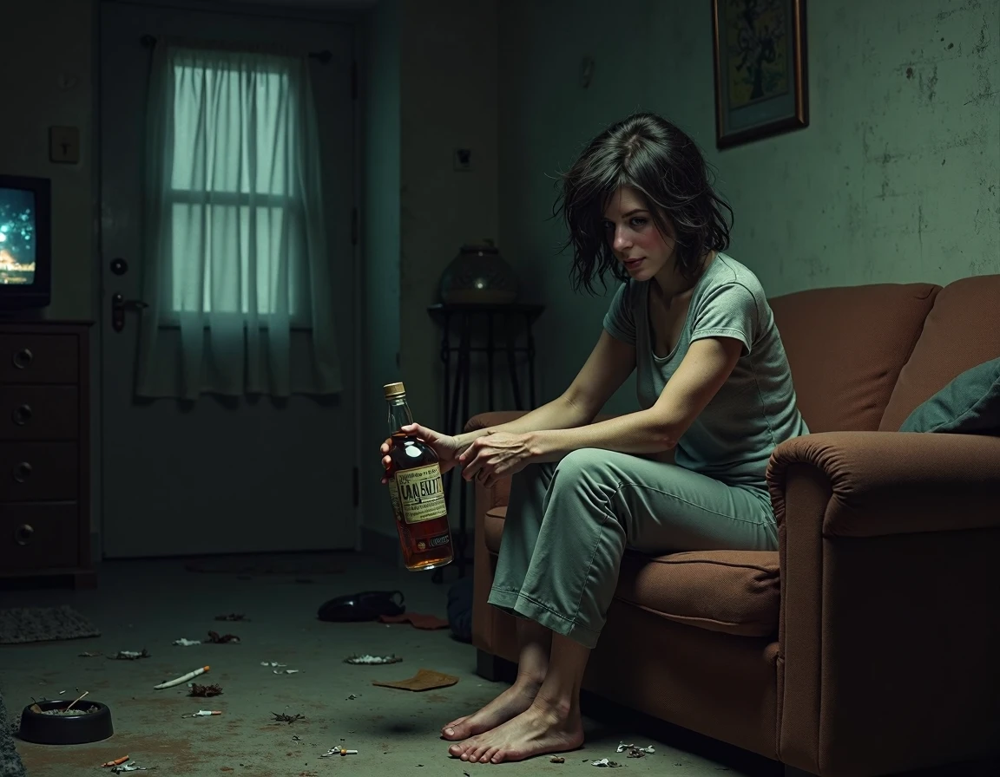

+380(97) 369 76
65
+380(97) 369 76
65Лечение женского алкоголизма в Харькове
Женское здоровье – без зависимости! Выход есть, и мы поможем его найти
Работаем в Одессе, Киеве, Львове, Харькове, Днепре, Запорожье, Черноморске


Бесплатная консультация, работаем круглосуточно 24/7
Женское здоровье – без зависимости! Выход есть, и мы поможем его найти
Работаем в Одессе, Киеве, Львове, Харькове, Днепре, Запорожье, Черноморске
Женский алкоголизм представляет собой одну из самых острых и сложных проблем, требующих специализированного и комплексного лечения. Наша служба предлагает индивидуальные программы лечения алкогольной зависимости у женщин, гарантируя полную конфиденциальность и поддержку на всех этапах выздоровления. Мы понимаем, что каждая женщина уникальна, и подход к лечению должен учитывать как физиологические, так и психологические особенности организма. Благодаря высококвалифицированным специалистам и современным методикам, каждая пациентка получает возможность не только преодолеть зависимость, но и восстановить эмоциональное равновесие, вернуть контроль над своей жизнью и улучшить общее качество жизни.
Если женщина начинает все чаще употреблять алкоголь под предлогом расслабления и успокоения, это может быть первым сигналом начала тяжелой зависимости. Ранняя реакция и комплексное лечение помогут предотвратить серьезные последствия для здоровья и личности.
Наша служба применяет современные протоколы ВОЗ, адаптированные под особенности женского организма. Программа лечения включает:
Стоимость лечения женского алкоголизма в городе Харьков начинается от 1699грн. Другие услуги наркологической службы UmbrellaPlus Харьков:
| Самые Популярные Услуги в Харькове | UmbrellaPlus | Цена |
|---|---|
| Вывод из запоя Харьков | От 1699 грн |
| Капельница от похмелья Харьков | От 1699 грн |
| Вывод из запоя на дому Харьков | От 1999 грн |
| Капельница от похмелья на дому Харьков | От 1999 грн |
Не дайте алкоголизму разрушить вашу жизнь или жизнь ваших близких. Лечение женского алкоголизма в Харькове в клинике UmbrellaPlus — это эффективный и комплексный подход, направленный на восстановление здоровья и психологического равновесия. Звоните сейчас по номеру 050-021-69-57 и получите квалифицированную помощь от наших специалистов. Помните, что своевременное обращение за помощью — это первый шаг к новой, здоровой жизни. Служба UmbrellaPlus работает круглосуточно, чтобы помочь вам преодолеть зависимость и вернуть контроль над своей жизнью!
Анонимно

"Никакими усилиями самостоятельно я не смогла преодолеть запой, и наступала ломка, сопровождаемая повышенным давлением и пульсом. Тогда я решила обратиться за помощью в клинику. Врачи оказали мне неоценимую поддержку! Уже прошел месяц, и я не только не употребляю алкоголь, но даже не испытываю к нему желания!"
Анонимно
"Могу с уверенностью порекомендовать данный центр для тех, кто ищет помощь при выводе из запоя. Я неоднократно обращался к ним и могу сказать, что цена соответствует качеству услуг. После проведения капельницы в клинике, вся тяга к алкоголю проходит, и я чувствую себя гораздо лучше. Это действительно эффективный метод, и я благодарен клинике за их профессионализм и заботу!"
Анонимно
"Я очень благодарен за то, что вы помогли мне разобраться с моей проблемой алкоголизма и найти ее решение. Давно осознавал, что без помощи профессионалов я не справлюсь, и я не ошибся, выбрав ваш центр Амбрелла. Здесь действительно предоставляется профессиональная помощь, которая оказалась для меня реальным спасением. Огромное спасибо за вашу поддержку и заботу!"
Анонимно
"Неоднократно я пытался бросить алкоголь самостоятельно, но каждый раз уговаривал себя продолжать. Я сначала ограничивался одной бутылкой в день, потом двумя, и в итоге вновь попадал в запой. Но в итоге, я смог прекратить употребление алкоголя только после того, как обратился в центр Амбрелла и заказал у них услугу вывода из запоя. Уже не пью 3 месяца и удалось полностью восстановиться. Благодарю врача который меня вел - Алексея Валерьевича"
Анонимно
"Здравствуйте! Я хотел бы выразить свою искреннюю благодарность клинике за быстрое и профессиональное освобождение моего мужа пивного рабства! Ранее у меня уже не было никаких надежд на его выздоровление. Однако, благодаря вашим перспективным методам лечения, мы теперь идем к полному отказу от алкоголя. Вы дали нам новую надежду и оказали неоценимую помощь! Спасибо вам за все!"
Анонимно
"Я долгое время страдал от запоев и не мог справиться с этой проблемой. Однако, когда я обратился в этот центр, они быстро помогли мне вернуться на ноги, и самое главное - предоставили мне возможность не возвращаться к запоям. Уже почти полгода я не испытываю запоев! Это для меня настоящее чудо, я никогда не думал, что смогу так преодолеть свои проблемы. Большое спасибо центру Амбрелла!"
Анонимно
"Благодарю ваш центр Амбрелла за оперативное и высококачественное лечение! Женский алкоголизм - это настоящее горе, с которым невозможно справиться в одиночку. Я уже потеряла надежду, но благодаря вашей помощи, она вернулась ко мне! Отдельная благодарность врачу Станиславу Вячеславовичу, а также благодарность Богу за то, что он послал мне такое чудо как ваша центр! Спасибо вам всем!"
Анонимно
"Хочу выразить благодарность врачу Владиславу Алексеевичу за то, что вы избавили меня от этого ужаса. Я уже был в отчаянии, перепробовал множество клиник и центров, но только здесь я наконец получил настоящую помощь! Алкоголь полностью разрушил меня, и если бы не ваша помощь, я, возможно, уже не был бы жив. С вами я смог вернуть себе жизнь и буду благодарен вам всегда!"
Приезд в течении 60 минут от момента поступления заявки
Наши филиалы есть во всех больших городах Украины.
Мы оказываем профессиональную доказательную медицинскую помощь. Гарантией является наше имя.
Номер телефона:
+380 (97) 369 76 65
+380 (50) 021 69 57
Адрес главного офиса: г. Харьков ул. Сумская 47
Офис вашего города нужно
уточнить
Работаем в: Одессе, Киеве, Львове, Харькове, Днепре,
Запорожье
Telegram: t.me/umbrellaplus
График работы: Круглосуточно